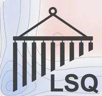
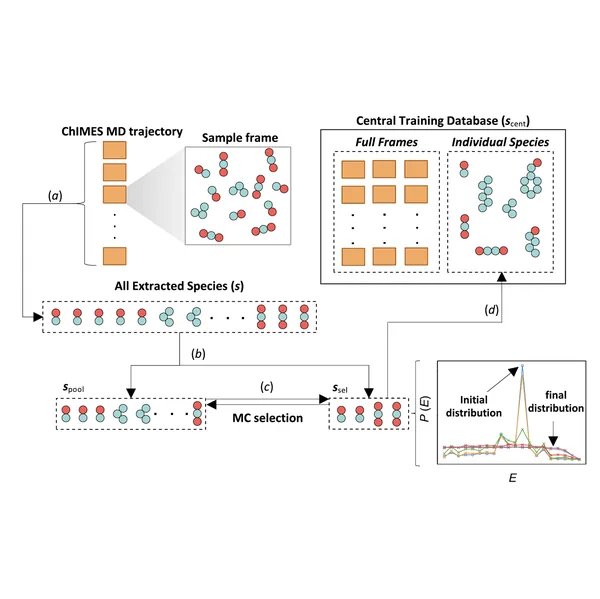
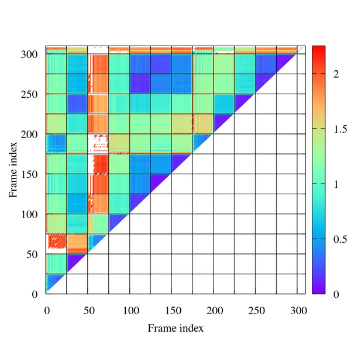
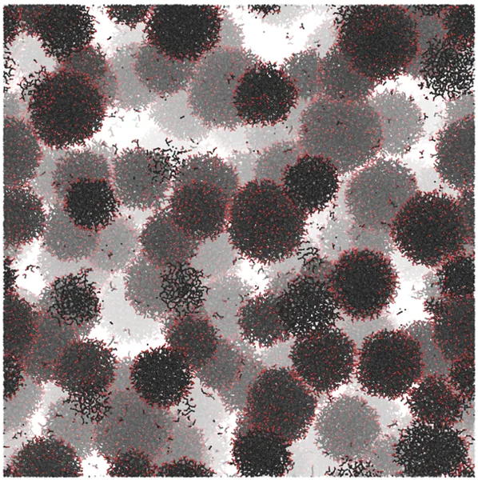

Software
We develop artificial intelligence tools that enable quantum-accurate simulation of complex, inherently multiscale systems on previously inaccessible scales.
ChIMES
We are the lead developers of the Chebyshev Interaction Model for Efficient Simulation (ChIMES), a physics-informed machine-learned interatomic potential (ML-IAP) and development framework. ChIMES models approach quantum accuracy through a systematically improvable, explicitly many-bodied basis of linear combinations of Chebyshev polynomials. ChIMES was the first ML-IAP specifically designed to describe condensed-phase chemistry under extreme conditions, and has since proven extensible to a wide range of problems, from structure in ambient water to the phase behavior of carbon at thousands of kelvin and tens of GPa.
Beyond generating models, we develop supporting tools that tackle grand challenges in ML-IAP development, including automation, reproducibility, uncertainty quantification, and training-set selection.
The ChIMES suite

ChIMES models can be generated with ChIMES LSQ, though the ALD is recommended for all but the most basic problems. The ChIMES Calculator supports C, C++, Fortran77, Fortran08, and Python3, includes an interface for LAMMPS, and the DFTB+ code ships with native ChIMES support. Models developed by our group are available in the ChIMES Calculator repository.
Selected capabilities

ChIMES Cluster-Based Active Learning for Reacting Systems
A new strategy built upon information entropy and statistical mechanics.

ChIMES Cluster-Graph Fingerprinting
A framework for application-agnostic, quantitative analysis of MLIP training and simulation data.

>Million-Atom Simulations Enabled by ChIMES
Predicting shock-driven nanocarbon synthesis with atomic resolution, on scales overlapping with experiment.
Group repositories
Insights from ML-accelerated DFT
Example workflows and ChIMES training/hyperparameter files for high-pressure phase diagram prediction.